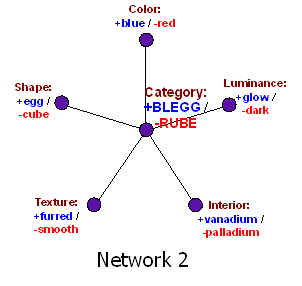

In Disguised Queries, I talked about a classification task of "bleggs" and "rubes". The typical blegg is blue, egg-shaped, furred, flexible, opaque, glows in the dark, and contains vanadium. The typical rube is red, cube-shaped, smooth, hard, translucent, unglowing, and contains palladium. For the sake of simplicity, let us forget the characteristics of flexibility/hardness and opaqueness/translucency. This leaves five dimensions in thingspace: Color, shape, texture, luminance, and interior.
Suppose I want to create an Artificial Neural Network (ANN) to predict unobserved blegg characteristics from observed blegg characteristics. And suppose I'm fairly naive about ANNs: I've read excited popular science books about how neural networks are distributed, emergent, and parallel just like the human brain!! but I can't derive the differential equations for gradient descent in a non-recurrent multilayer network with sigmoid units (which is actually a lot easier than it sounds).
Then I might design a neural network that looks something like this:
Network 1 is for classifying bleggs and rubes. But since "blegg" is an unfamiliar and synthetic concept, I've also included a similar Network 1b for distinguishing humans from Space Monsters, with input from Aristotle ("All men are mortal") and Plato's Academy ("A featherless biped with broad nails").
A neural network needs a learning rule. The obvious idea is that when two nodes are often active at the same time, we should strengthen the connection between them—this is one of the first rules ever proposed for training a neural network, known as Hebb's Rule.
Thus, if you often saw things that were both blue and furred—thus simultaneously activating the "color" node in the + state and the "texture" node in the + state—the connection would strengthen between color and texture, so that + colors activated + textures, and vice versa. If you saw things that were blue and egg-shaped and vanadium-containing, that would strengthen positive mutual connections between color and shape and interior.
Let's say you've already seen plenty of bleggs and rubes come off the conveyor belt. But now you see something that's furred, egg-shaped, and—gasp!—reddish purple (which we'll model as a "color" activation level of -2/3). You haven't yet tested the luminance, or the interior. What to predict, what to predict?
What happens then is that the activation levels in Network 1 bounce around a bit. Positive activation flows luminance from shape, negative activation flows to interior from color, negative activation flows from interior to luminance... Of course all these messages are passed in parallel!! and asynchronously!! just like the human brain...
Finally Network 1 settles into a stable state, which has high positive activation for "luminance" and "interior". The network may be said to "expect" (though it has not yet seen) that the object will glow in the dark, and that it contains vanadium.
And lo, Network 1 exhibits this behavior even though there's no explicit node that says whether the object is a blegg or not. The judgment is implicit in the whole network!! Bleggness is an attractor!! which arises as the result of emergent behavior!! from the distributed!! learning rule.
Now in real life, this kind of network design—however faddish it may sound—runs into all sorts of problems. Recurrent networks don't always settle right away: They can oscillate, or exhibit chaotic behavior, or just take a very long time to settle down. This is a Bad Thing when you see something big and yellow and striped, and you have to wait five minutes for your distributed neural network to settle into the "tiger" attractor. Asynchronous and parallel it may be, but it's not real-time.
And there are other problems, like double-counting the evidence when messages bounce back and forth: If you suspect that an object glows in the dark, your suspicion will activate belief that the object contains vanadium, which in turn will activate belief that the object glows in the dark.
Plus if you try to scale up the Network 1 design, it requires O(N2) connections, where N is the total number of observables.
So what might be a more realistic neural network design?

In this network, a wave of activation converges on the central node from any clamped (observed) nodes, and then surges back out again to any unclamped (unobserved) nodes. Which means we can compute the answer in one step, rather than waiting for the network to settle—an important requirement in biology when the neurons only run at 20Hz. And the network architecture scales as O(N), rather than O(N2).
Admittedly, there are some things you can notice more easily with the first network architecture than the second. Network 1 has a direct connection between every two nodes. So if red objects never glow in the dark, but red furred objects usually have the other blegg characteristics like egg-shape and vanadium, Network 1 can easily represent this: it just takes a very strong direct negative connection from color to luminance, but more powerful positive connections from texture to all other nodes except luminance.
Nor is this a "special exception" to the general rule that bleggs glow—remember, in Network 1, there is no unit that represents blegg-ness; blegg-ness emerges as an attractor in the distributed network.
So yes, those N2 connections were buying us something. But not very much. Network 1 is not more useful on most real-world problems, where you rarely find an animal stuck halfway between being a cat and a dog.
(There are also facts that you can't easily represent in Network 1 or Network 2. Let's say sea-blue color and spheroid shape, when found together, always indicate the presence of palladium; but when found individually, without the other, they are each very strong evidence for vanadium. This is hard to represent, in either architecture, without extra nodes. Both Network 1 and Network 2 embody implicit assumptions about what kind of environmental structure is likely to exist; the ability to read this off is what separates the adults from the babes, in machine learning.)
Make no mistake: Neither Network 1, nor Network 2, are biologically realistic. But it still seems like a fair guess that however the brain really works, it is in some sense closer to Network 2 than Network 1. Fast, cheap, scalable, works well to distinguish dogs and cats: natural selection goes for that sort of thing like water running down a fitness landscape.
It seems like an ordinary enough task to classify objects as either bleggs or rubes, tossing them into the appropriate bin. But would you notice if sea-blue objects never glowed in the dark?
Maybe, if someone presented you with twenty objects that were alike only in being sea-blue, and then switched off the light, and none of the objects glowed. If you got hit over the head with it, in other words. Perhaps by presenting you with all these sea-blue objects in a group, your brain forms a new subcategory, and can detect the "doesn't glow" characteristic within that subcategory. But you probably wouldn't notice if the sea-blue objects were scattered among a hundred other bleggs and rubes. It wouldn't be easy or intuitive to notice, the way that distinguishing cats and dogs is easy and intuitive.
Or: "Socrates is human, all humans are mortal, therefore Socrates is mortal." How did Aristotle know that Socrates was human? Well, Socrates had no feathers, and broad nails, and walked upright, and spoke Greek, and, well, was generally shaped like a human and acted like one. So the brain decides, once and for all, that Socrates is human; and from there, infers that Socrates is mortal like all other humans thus yet observed. It doesn't seem easy or intuitive to ask how much wearing clothes, as opposed to using language, is associated with mortality. Just, "things that wear clothes and use language are human" and "humans are mortal".
Are there biases associated with trying to classify things into categories once and for all? Of course there are. See e.g. Cultish Countercultishness.
To be continued...
{kind=link}
{kind=link}